CODES / reliability / mc
Monte-Carlo
Contents
Syntax
- res=CODES.reliability.mc(g,dim) compute a Crude Monte-Carlo estimate of the probability that 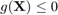. The dim random variables 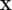 are independent standard gaussian.
- res=CODES.reliability.mc(g,x_mc) uses the user-defined Monte-Carlo sample x_mc.
- res=CODES.reliability.mc(...,param,value) uses a list of parameters param and values value (see, parameter table).
Description
For a given limit state function 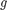 and a joint PDF 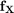, the probability of failure is:
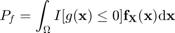
A Crude Monte Carlo simulation with 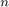 samples approximates the integral as:
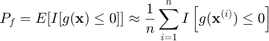
In general, the probability of failure is dependent on distribution hyper-parameters 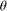 and deterministic variables 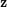:
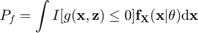
Derivatives of the probability of failure can be derived for hyper-parameters:
![$$\begin{array}{rcl}\displaystyle\frac{dP_f}{d\theta}&=&\displaystyle\frac{d}{d\theta}\int I[g(\mathbf{x},\mathbf{z})\leq 0]\mathbf{f}_\mathbf{X}(\mathbf{x}|\theta)d\mathbf{x}\\&=&\displaystyle\int I[g(\mathbf{x},\mathbf{z})\leq 0]\frac{d\ln \mathbf{f}_\mathbf{X}}{d\theta}f_\mathbf{X}(\mathbf{x}|\theta)d\mathbf{x}\\&\approx&\displaystyle\frac{1}{n}\sum_{i=1}^n I[g(\mathbf{x}^{(i)},\mathbf{z})\leq 0]\left.\frac{d\ln \mathbf{f}_\mathbf{X}}{d\theta}\right|_{\mathbf{x}^{(i)}}\end{array}$$](mc_eq02495742741027174769.png)
and for deterministic variables (Lacaze et al., 2015):
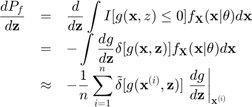
Note that these sensitivities are cross-products of the probability of failure estimation and do not require any additional function call.
Parameters
| param | value | Description |
|---|---|---|
| 'sampler' | function_handle, { [ ] } | A function that returns realizations according to the desired distribution. For example, the default is @(N)normrnd(0,1,N,dim). |
| 'Tinv' | function_handle, { [ ] } | An inverse transformation function that transform realizations from a standard gaussian space into the desired space. For example, for an exponential space Tinv=@(u)expinv(normcdf(u),1). |
| 'CoV' | positive, {Inf} | Coefficient of variation to be achieved (in %), see Description. |
| 'memory' | positive integer, {1e6} | When functions are vectorial in matlab, computing time is improved in exchange for memory use. To avoid memory crashes, no more than 'memory' samples are evaluated at once. |
| 'alpha' | positive, {0.05} | Significance level for (1-alpha) confidence interval. |
| 'limit' | positive integer, {1e9} | Maximum limit of samples allowed to be evaluated (in case CoV requested or actual Pf are too low). |
| 'vectorial' | logical, {false} | Whether the limit state function g is vectorial. Vectorization should always be used if possible and 'vectorial' set to true. |
| 'verbose' | logical, {false} | Defines the verbose level. |
| 'store' | logical, {false} | Whether the Monte-Carlo sample should be stored and returned. |
| 'lnPDF' | function_handle | Log of joint PDF as a function of (x,theta) for dPfdtheta (see Mini Tutorial for an example). |
| 'dlnPDF' | function_handle | Derivative of log of joint PDF with respect to theta as a function of (x,theta)for dPfdtheta (see Mini Tutorial for an example). |
| 'theta' | real value | Theta value for dPfdtheta (see Mini Tutorial for an example). |
| 'nz' | positive integer | Number of deterministic variables for dPfdz. g is expected to return two outputs, g values and g gradients with respect to z (see Mini Tutorial for an example). |
| 'frac' | positive integer | Alpha fraction for dPfdz (see Mini Tutorial for an example and Lacaze et al., 2015, for details). |
| 'dirac' | {'gauss'}, 'tgauss', 'poisson', 'sinc', 'bump' | Dirac approximation function (see Mini Tutorial for an example and Lacaze et al., 2015, for details). |
Example
Compute and plot a generalized "max-min" sample
g=@CODES.test.lin;
res=CODES.reliability.mc(g,2,'vectorial',true);
disp(res)
Pf: 0.0013
beta: 3.0002
LS_count: 1000000
CoV: 2.7208
CI_Pf: [0.0013 0.0014]
CI_beta: [2.9843 3.0169]
Mini Tutorial
 |
A mini tutorial of the capabilities of the mc function. |
References
- Lacaze et al. (2015): Lacaze, S., Brevault, L., Missoum, S., Balesdent, M. (2015). Probability of failure sensitivity with respect to decision variables. Structural and Multidisciplinary Optimization, First Published Online. DOI
See also
© 2015 Computational Optimal Design of Engineering System Laboratory. University of Arizona.</html\n%%\n
|
|
Computational Optimal Design of Engineering Systems |

|